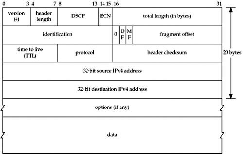

A.2 IPv4 Header
The IP layer provides a connectionless best-effort datagram delivery service (RFC 791 [Postel 1981a]). IP makes its best effort to deliver an IP datagram to the specified destination, but there is no guarantee that the datagram will arrive, will arrive in order relative to other packets, or will arrive only once. Any desired reliability, ordering, and duplicate suppression must be added by the upper layers. In the case of a TCP or SCTP application, this is performed by the transport layer. In the case of a UDP application, this must be done by the application since UDP is unreliable; we show an example of this in Section 22.5.
One of the most important functions of the IP layer is routing. Every IP datagram contains a source and destination address. Figure A.1 shows the format of an IPv4 header.

The 4-bit version field is 4. This has been the version of IP in use since the early 1980s. The header length field is the length of the entire IP header, including any options, in whole 32-bit words. The maximum value for this 4-bit field is 15 (0xf), giving a maximum IP header length of 60 bytes. Therefore, with the fixed portion of the header occupying 20 bytes, this allows for up to 40 bytes of options. The 6-bit Differentiated Services Code Point (DSCP) field (RFC 2474 [Nichols et al. 1998]) and the 2-bit Explicit Congestion Notification (ECN) field (RFC 3168 [Ramakrishnan, Floyd, and Black 2001]) replace the historical 8-bit type-of-service (TOS) field, which was described in RFC 1349 [Almquist 1992]. We can set all 8 bits of this field with the IP_TOS socket option (Section 7.6), although the kernel may overwrite any value we set to enforce Diffserv policy or implement ECN. The 16-bit total length field is the total length in bytes of the IP datagram, including the IPv4 header. The amount of data in the datagram is this field minus 4 times the header length (recall that the header length is in units of whole 32-bit words, or 4 bytes). This field is required because some datalinks pad the frame to some minimum length (e.g., Ethernet) and it is possible for the size of a valid IP datagram to be less than the datalink minimum. The 16-bit identification field is set to a different value for each IP datagram and enables fragmentation and reassembly (Section 2.11). The value must be unique for the packet's source, destination, and protocol, for the length of time that the datagram could be in transit. If there is no chance that the packet will be fragmented, for instance, the DF bit is set, there is no need to set this field. The DF (don't fragment) bit, the MF (more fragments) bit, and the 13-bit fragment offset field are also used with fragmentation and reassembly. The DF bit is also used with path MTU discovery (Section 2.11). The 8-bit time-to-live (TTL) field is set by the sender and then decremented by 1 each time a router forwards the datagram. The datagram is discarded by any router that decrements the value to 0. This limits the lifetime of any IP datagram to 255 hops. A common default for this field is 64, but we can query and change this default with the IP_TTL and IP_MULTICAST_TTL socket options (Section 7.6). The 8-bit protocol field specifies the next layer protocol contained in the IP datagram. Typical values are 1 (ICMPv4), 2 (IGMPv4), 6 (TCP), and 17 (UDP). These values are specified in the IANA's "Protocol Numbers" registry [IANA]. The 16-bit header checksum is calculated over just the IP header (including any options). The algorithm is the standard Internet checksum algorithm, a simple 16-bit one's-complement addition, which we show in Figure 28.15. The source IPv4 address and the destination IPv4 address are both 32-bit fields. We describe the options field in Section 27.2 and show an example of the IPv4 source route option in Section 27.3.
 |